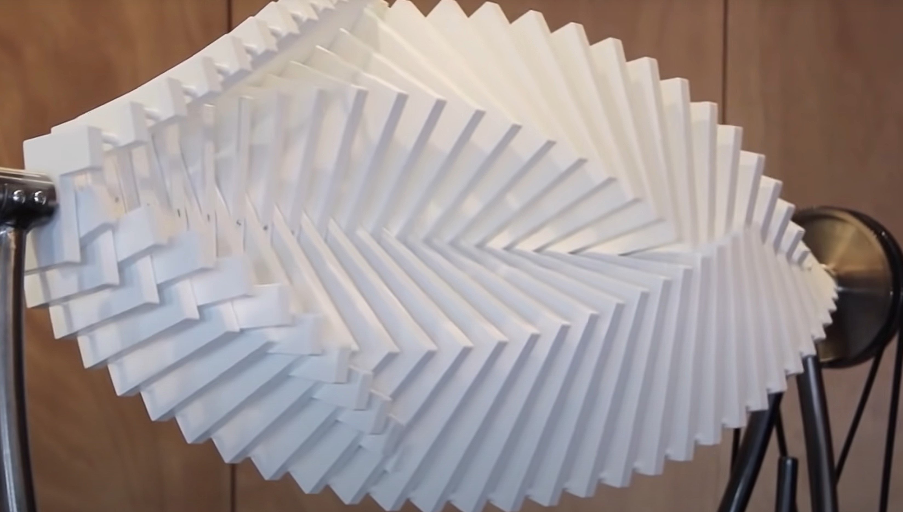
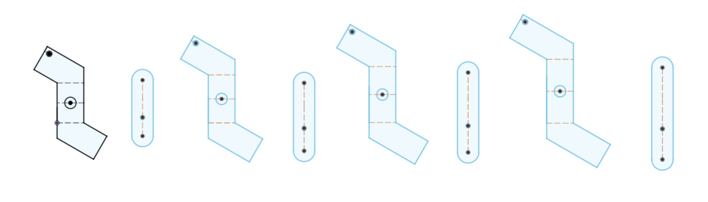
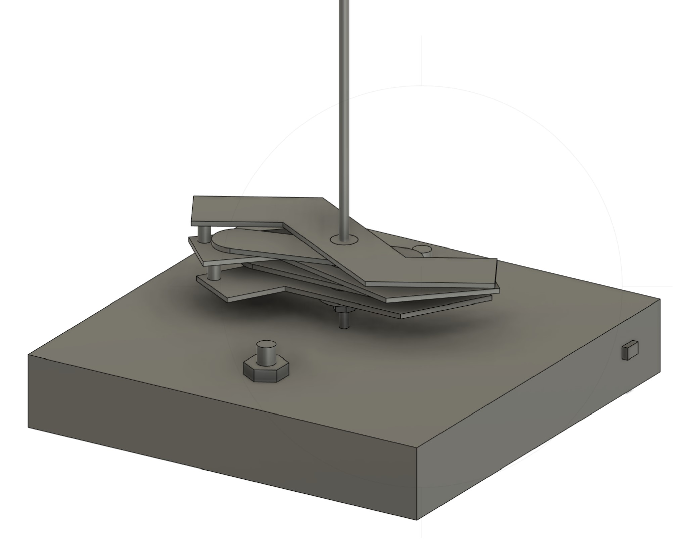

Inspiration
This week we were tasked with building a kinetic sculpture. My inspiration this week came from the Asinas sculpture by Jennifer Townley.

The sculpture is a double helix where you have two seperate bodies spinning in alternating directions on the same axis. It is super cool to look at
in motion, but honestly difficult to understand how it works. Specifically, how one can have some objects rotate clockwise and others rotate counter
clockwise all on the same axis
I eventually came up with an idea for my design at the Queen's Head pub and quickly asked the Bartender for a napkin so I could sketch out my idea. Quite
the movie moment, except for the fact that the Bartender was my friend..
Anyways... The premis here is that half of the objects will be directly attached to the central axis, thus when the axis is spun, so are the objects. Then the
other objects are attached to the axis by a ball bearing, thus when the axis rotates, the inner bearing will rotate, but the actual piece wont rotate. Then I could
connect all of the pieces with bearings together so that rotating 1 will rotate all of them. Then its just a matter of rotating the outer most bearing based piece.
Modeling my Sculpture
So I ended up settling on two types of pieces. The peices that will connect directly to the rotating axis are ovular slots, where their insert is slightly ofset.
Then the other pieces are like zig zag shapes that are connected with radial symetry. I want the pieces to have a sort of eb-and-flow to them, so I am having them
grow as they go up the scupture. After a few more hours of working in Fusion, creating these sketches and having them be properly constrained actully was a pretty
smooth process.

These are some of the pieces to be laser cut, but I also think its useful to have 3d model of everything that will be going on in the sculpture. So in Fusion360 I
went ahead and created a 3d model of what I espect the sculpture to sort of look like. This was actually a ton of work - but I am glad I did it because I became aware
of some issues that would come up in the fabrication process that I am glad to have had identified earlier. I still think I have a lot to work on in terms of getting
3D models created functionally in fusion360, but I was happy with the progess I made regarding the correct dimentions and proportionality to create a model that would
prove to be accurate to the final build.

So I ended up with something like this, I had alot of fun playing around with the tolerances regarding the lengths of the piecse so that when the spun together the
slot shaped pieces wouldnt hit the supports of the zag shaped pieces. it was a little tricky to figure out because the slots are oblong and the supports are located
on a diagonal, but eventually I figured it out so they would be pretty close
The last part I needed to model was the gears, I needed 1 gear set to connect directly to the axis and 1 gear to connect to the zag shapes that way I could control the
rotation of both of them seperately. I am currently useing a specific yellow motor that has a cut circular shape, so I modeled two gears that would press fit onto the motor
axels as well. The gears ended up proving to be slightly challenging because the model I used had a high degree of splines (very complex lines) which I later found out that
the lazer cutter could not handle. So I managed to find an online resource
here
to creat a SVG gear model, which I then ported into fusion to create a DXF file
Construction and Testing
So then went the process of construction. I started with a cardboard proof of concept to start out - and now I am starting to get a hang of things, so wanst too bad. So then
off to wood based cuts for the slots and zags that way I had something a little bit more firm. I ended up deciding to undercut the inner pieces of the wood that would attach
to the axel and the bearings, that way I could manually sand them to get a super tight finish. I got it to the point that I could just barely get the parts in with a rubber
mallet - so I am pretty happy with how that turned out.
As for the gears, after fixing the modeling issue I was able to get those cut and they worked like a charm on the first time, so I was super happy with how that turned out.
I was dismayed to find out two major issues though, 1) We ran out of the motors I was using (only had 1) and 2) We ran out of the bearings I was using (need to be 8mm inner diameter).
So I accepted that this would be a proof of concept prototype. I put everything together using hot glue and my press fit base I made last week that way the design would not end up being
super permanent. After getting everything put together it seemed to work manually, but have to put it to the test. So I pressed on the gear motor and here's what we got:


I am super happy with with how it worked out - I think this is a great proof of concept. For next week I hope to get that second motor in and have the motors attached to the sculpture.
But as you can see with the motor spinning the different gears, the sculpture pieces will spin different directions, so I got the effect that I was hoping for.
After I have a fully functional prototype that has some elementary circuity done, I do hope to revisit this project. I want to make it in acrylic to create a really nice looking final piece.
The wood I used is 3mm and so with the stress i put on it from the press fitting, I did end up seeing some warping which wasn't ideal. So hopefully with a more rigerous material like acrylic
I wont run into that same issue.